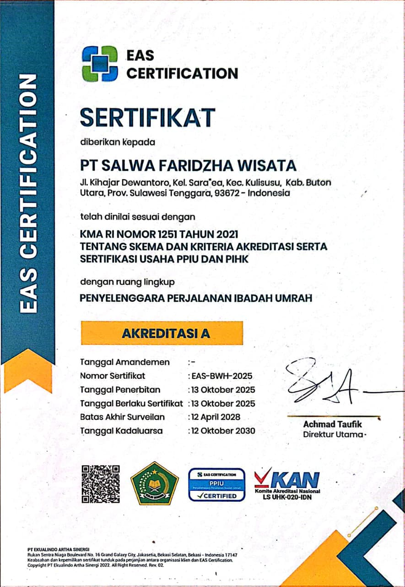

<section id="certificates" class="bg-gray-50">

    <div class="mx-auto max-w-7xl
           px-6 py-16
           sm:py-20
           lg:px-8 lg:py-24">

        <!-- =========================
         SECTION HEADING
         ========================= -->
        <div class="reveal mx-auto max-w-3xl text-center">

            <span class="text-xs font-bold uppercase
               tracking-[0.2em]
               text-green-700
               sm:text-sm">
                Legalitas & Sertifikasi
            </span>

            <h2 class="mt-3 text-3xl font-extrabold
               leading-tight text-gray-900
               sm:text-4xl">
                Komitmen untuk
                <span class="text-green-800">
                    Melayani dengan Terpercaya
                </span>
            </h2>

            <p class="mx-auto mt-4 max-w-2xl
               text-sm leading-7
               text-gray-600
               sm:text-base">
                Salwa Tours berkomitmen menjaga standar
                pelayanan dan kepatuhan melalui legalitas
                serta sertifikasi yang dimiliki perusahaan.
            </p>

        </div>


        <!-- =========================
         CERTIFICATE CONTENT
         ========================= -->
        <div class="reveal mx-auto mt-12 max-w-6xl
             overflow-hidden
             rounded-3xl
             bg-white
             shadow-sm
             ring-1 ring-gray-100">

            <div class="grid items-center
               lg:grid-cols-2">


                <!-- =========================
             CERTIFICATE IMAGE
             ========================= -->
                <div class="flex min-h-[420px]
                 items-center justify-center
                 bg-gray-50
                 p-6
                 sm:p-10">

                    <div class="group overflow-hidden
                   rounded-xl
                   bg-white
                   shadow-md
                   ring-1 ring-gray-200">

                        

                    </div>

                </div>


                <!-- =========================
             DESCRIPTION
             ========================= -->
                <div class="p-7 sm:p-10 lg:p-12">

                    <!-- =========================
         CERTIFICATION
         ========================= -->
                    <span class="inline-flex items-center
               rounded-full
               bg-green-50
               px-3 py-1.5
               text-xs font-bold
               uppercase tracking-wider
               text-green-700">
                        Sertifikasi
                    </span>


                    <h3 class="mt-4 text-2xl font-extrabold
               leading-tight text-gray-900
               sm:text-3xl">
                        Akreditasi A
                    </h3>


                    <p class="mt-2 text-base font-semibold
               text-green-800">
                        EAS Certification
                    </p>


                    <p class="mt-5 text-sm
               leading-7 text-gray-600
               sm:text-base">

                        Salwa Tours memperoleh
                        <strong class="font-semibold text-gray-800">
                            Akreditasi A dari EAS Certification
                        </strong>
                        sebagai bentuk pengakuan atas komitmen
                        perusahaan dalam menjaga standar pelayanan,
                        profesionalitas, serta kualitas penyelenggaraan
                        perjalanan ibadah umrah. Akreditasi ini menjadi
                        bagian dari upaya Salwa Tours untuk memberikan
                        rasa aman, nyaman, dan kepercayaan kepada
                        setiap jamaah dalam mempersiapkan perjalanan
                        menuju Tanah Suci.


                    </p>


                    <!-- =========================
         DIVIDER
         ========================= -->
                    <div class="my-7 h-px bg-gray-100"></div>


                    <!-- =========================
         PPIU
         ========================= -->

                    <div>

                        <span class="inline-flex items-center
               rounded-full
               bg-green-50
               px-3 py-1.5
               text-xs font-bold
               uppercase tracking-wider
               text-green-700">
                            legalitas Penyelenggara
                        </span>


                        <h4 class="mt-2 text-lg font-bold
                   text-gray-900
                   sm:text-xl">
                            Izin PPIU
                        </h4>


                        <p class="mt-2 text-sm
                   leading-7 text-gray-600
                   sm:text-base">

                            Sebagai penyelenggara perjalanan ibadah umrah,
                            Salwa Tours memiliki izin
                            <strong class="font-semibold text-gray-800">
                                Penyelenggara Perjalanan Ibadah Umrah (PPIU)
                            </strong>
                            sebagai bagian dari legalitas perusahaan dalam
                            memberikan layanan perjalanan ibadah kepada
                            masyarakat. Legalitas ini menjadi salah satu
                            bentuk komitmen Salwa Tours untuk menjalankan
                            pelayanan secara resmi, profesional, dan sesuai
                            dengan ketentuan yang berlaku.

                        </p>

                    </div>


                    <!-- =========================
         PPIU NUMBER
         ========================= -->
                    <div class="mt-5 flex items-center gap-4
               rounded-xl
               border border-green-100
               bg-green-50
               px-4 py-4">

                        <!-- Icon -->
                        <div class="flex h-11 w-11 shrink-0
                   items-center justify-center
                   rounded-full
                   bg-green-800
                   text-white">

                            <svg xmlns="http://www.w3.org/2000/svg" viewBox="0 0 24 24" fill="none"
                                stroke="currentColor" stroke-width="2" class="h-5 w-5" aria-hidden="true">

                                <path stroke-linecap="round" stroke-linejoin="round" d="M9 12.75 11.25 15 15 9.75" />

                                <path stroke-linecap="round" stroke-linejoin="round" d="M12 3.75 4.5 6.75v5.625
                       c0 4.56 3.225 7.425 7.5 8.625
                       4.275-1.2 7.5-4.065 7.5-8.625V6.75L12 3.75Z" />

                            </svg>

                        </div>


                        <!-- Information -->
                        <div class="min-w-0">

                            <p class="text-xs font-medium
                       text-green-700">
                                Nomor Izin
                            </p>

                            <p class="mt-0.5 text-sm font-bold
                       tracking-wide
                       text-gray-900
                       sm:text-base">
                                12390005127750001
                            </p>

                            <p class="mt-0.5 text-xs
                       text-gray-500">
                                Penyelenggara Perjalanan Ibadah Umrah (PPIU)
                            </p>

                        </div>

                    </div>

                </div>

            </div>

        </div>

    </div>

</section>